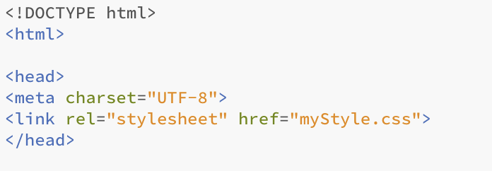

Introduktion
Internettet er et forunderligt sted og er i dag den dominerende teknologi til deling af information. Man kan selvfølgelig finde andre finurlige ting på internettet end almen information som eks. spil.
I dette forløb har vi fokuseret på opbygningen af hjemmesider for til sidst at ende ud med en brugbar hjemmeside.
Head-tag og dens indhold
Den første linje kode, som bliver brugt efter <html> er tagget <head>. Dette tag runner baggrundskoden for min hjemmeside. I dette tilfælde koden <meta charset="UTF-8"> og <link rel="stylesheet" href="myStyle.css"> <head> lukkes af med et closing tag: </head> for, at den resterende kode kan kører.
Lad os kigge på den første kode inde i <head>. <meta charset="UTF-8">, denne kode gør det muligt for programmører og kodere at bruge special tegn som æ, ø og å på deres hjemmesider. Den næste kode er <link rel="stylesheet" href="myStyle.css">. Her linker jeg til mit mystyle som er det jeg bruger til at designe min hjemmeside.

CSS kode
I denne boks vil jeg gå i dybden med den CSS kode jeg har brugt til min mystyle fil.
Men først, hvad er CSS kode?
CSS står for Cascading Style Sheets og er den kode som bruges til at styre udseendet på en hjemmeside.
Kasser
De kasser båede CSS og HTML koden står forklaret indeholder en masse forskellige information. Før kassen kan sættes ind på ens hjemmeside giver man den de rette dimensioner og layout, alt dette gøres i CSS.
kasse 1's kode ser således ud:
div.box1 {
width: 650px;
border: 2px solid #123C69;
padding: 15px;
margin: 20px;
background-color: #EEE2DC;
position: fixed;
top: 225px;
right: -10px;}
div.box1 gør det muligt senere hen at kalde på kassen ved hjælp af tagget <div class="box1">. Mellem krølleparantserne {} skrives det layout man ønsker kassen skal havde.
Width sætter bredden på kassen, border indeholder båede informationen om hvor tyk kanten udenom kassen skal være (2px), hvordan kanten skal se ud (solid) samt farven på outlinen(#123C69).
Kassen vil naturligt placere sig oppe mod venstre hjørne hvis man ikke manuelt giver den en plads. Dette er her gjort ved hjælp af position: fixed; som sætter kassens position til altid at være det samme.
Menu bar
Oppe i højre hjørne af min hjemmeside finder man en lille menubar som gør det muligt at
navigere rundt på de forskellige undersider. Den er lavet ved hjælp af både CSS men også almendelig HTML kodning.
I min CSS fil har jeg defineret en "ul" som er der selve listen laves efterfulgt af "li" li a" og "li a:hover"
ul koden:
ul{
list-style-type: none;
margin: 0;
padding: 0;
overflow: hidden;
background-color:rgb(15,35,54); }
"List-style-type" er en funktion som gør det muligt at bruge forskellige stile til sin manubar, eks kunne den være lodret i stedet for vandret eller knapperne kunne være cirkler. "Margin" og "padding" er her sat til nul for ikke at have underlige linje afstande mellem knapperne, "overflow: hidden" er så man ikke kan scrolle i selve menubaren og det sidste "background-color:rgb(15,35,54);" giver farven på hele menu linje
li koderne har forskellige funktioner, den første "li" indeholder positionen og gør at hele menubaren "floater" i højre hjørne. "li a" giver det simple layout til de forskellige knapper, ville man have forskelligt for hvert knap kunne man lave en "li b" og en "li c".
Tilsidst er der "li a:hover" Denne gør at når brugeren holder musen henover knappen så skifter den farve.
Nu er vi nået til indsætningen af selve menubaren. Dette gøres ved hjælp af følgende kode:
<ul>
<li><a class="active" href="Indexp.html">Om mig</a></li>
<li><a href="index.html">Hjem</a></li>
<li><a href="#indexa.html">AstroPi</a></li>
<ul>
Først og fremmest kalder vi på den funktion vi lavede "ul". Derefter bruger vi li a funktionerne til at kalde på de forskellige hjemmesider der skal linkes til. Dette gøres ved hjælp af class="active" som kalder på alle de aktive sider man har. Derefter referer man til den fil der skal linkes til og giver den et navn. Dette gentager man for alle sider man skal have linket til. Ville man have knapper i forskellige farver kunne man her havde lavet en "li b" og erstattet b med a's plads i koden.